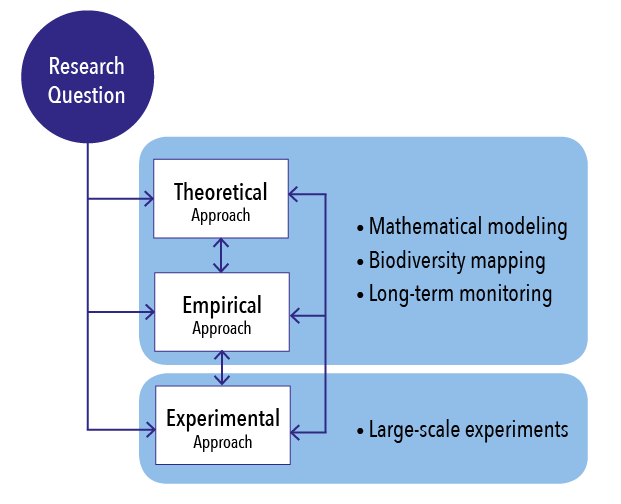

What is ArcticWEB?
ArcticWEB is an academic initiative to create an international network of scientists dedicated to conduct active multi-disciplinary research on ecosystem processes in the Arctic, and to study the functioning of terrestrial ecosystems in the context of climate change. ArcticWEB will largely benefits from ongoing initiatives such as the Circumpolar Biodiversity Monitoring Program (CBMP), a working group of the Conservation of Arctic Fauna and Flora (CAFF) under the Arctic Council.

Understanding food web functionning in a warming tundra